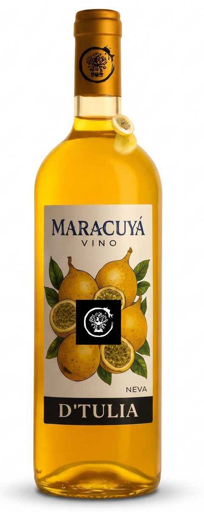
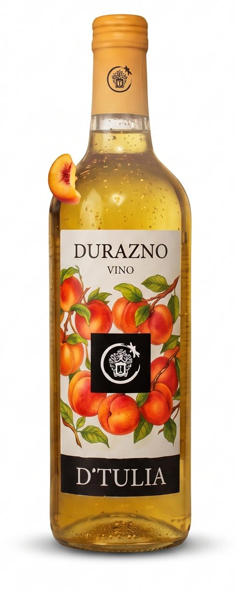
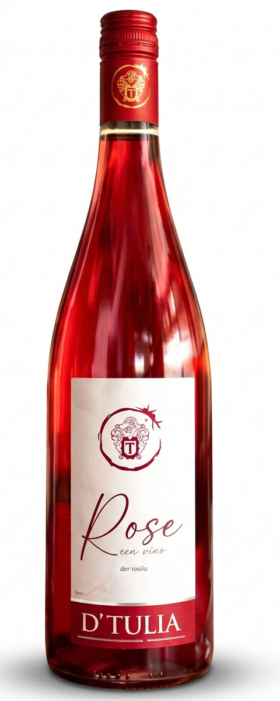
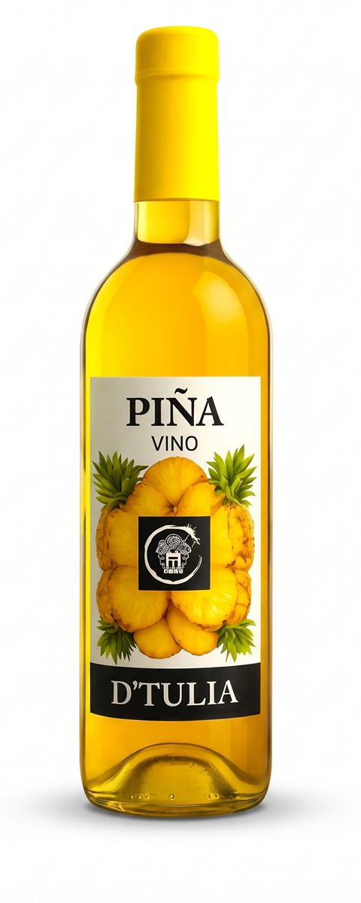
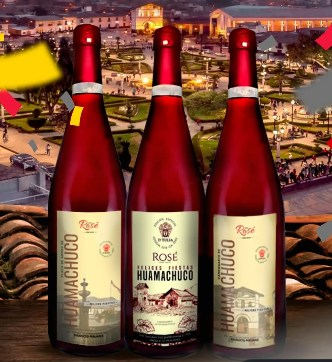

Producción propia · Trujillo, Perú
Vinos y piscos de la casa, para brindar en la tuya.
Vinos, piscos, cremas y macerados de pisco, licores y jarabes para cócteles. De nuestro almacén en Trujillo van directo a tu mesa, tu bodega o tu celebración.
- +35 productosVinos, piscos y licores
- 7 formatosDe 250 ml a 4 litros
- EnvíosDelivery y otras ciudades



01 · Nosotros
Una fábrica pequeña, con oficio de las grandes.
En D'Tulia no revendemos: producimos. Cada lote de vino sale de nuestra fábrica, pasa por nuestras manos y llega a nuestro almacén en Trujillo, desde donde lo despachamos a tiendas, bodegas y familias de todo el norte.
-
I.
Elaboramos
Recetas propias y fruta seleccionada. Fermentamos y reposamos sin apuros, en pequeños lotes, como se hace en casa.
-
II.
Embotellamos
Llenamos y sellamos cada presentación en la fábrica, con control de cada lote antes de salir.
-
III.
Encajamos y enviamos
Las cajas llegan a nuestro almacén en Trujillo y de ahí parten a tu casa, tu negocio o tu ciudad.

02 · Catálogo
Nuestro catálogo
Vinos, piscos, cremas, macerados, licores y jarabes D'Tulia. Elige el formato y el botón arma tu mensaje de WhatsApp para que solo tengas que enviarlo.
03 · Presentaciones
Un tamaño para cada ocasión
Desde el brindis personal hasta las grandes celebraciones. Todas se venden por unidad o por caja cerrada.

04 · Etiquetas personalizadas
Tu vino, con tu propia etiqueta.
Diseñamos etiquetas a la medida de tu celebración: el nombre de tu pueblo, tu fiesta, tu empresa o tu familia, en nuestras botellas de vino. Un recuerdo que se brinda y se guarda.
- Fiestas patronales
- Matrimonios
- Aniversarios
- Empresas y regalos corporativos
- Promociones y graduaciones
- 1Cuéntanos la ocasiónNombre, fecha, logo o la imagen que quieras mostrar.
- 2Diseñamos tu etiquetaTe enviamos la propuesta para que la apruebes.
- 3Embotellamos tu pedidoCon el sabor y la presentación que elijas, listo para tu evento.
Consulta cantidades mínimas y tiempos de entrega.
05 · Cómo pedir
Directo de la bodega a tu copa
Pedir es simple, rápido y sin complicaciones.
-
1
Elige tu producto y formato
Escoge lo que quieras del catálogo, en botella suelta o por caja.
-
2
Escríbenos al WhatsApp
Te confirmamos precio, stock y forma de pago, y coordinamos la entrega.
-
3
Recibe tu pedido
Recoge en nuestro almacén, pide delivery en Trujillo o envío a tu ciudad.
Atención a negocios
¿Tienes una bodega, restaurante o evento?
Precios especiales por caja para revendedores y celebraciones.
06 · Dónde estamos
Desde Trujillo para todo el norte
Almacén principal
D'Tulia · Trujillo
-
Horario de atención
-
EnvíosDelivery en Trujillo y envíos a otras ciudades
07 · Preguntas
Preguntas frecuentes
Todo lo que necesitas saber sobre nuestros vinos y su despacho.
¿Venden por unidad o solo por caja?
Por las dos. Puedes pedir una sola botella o cajas completas. La caja trae 24 unidades en chata, 12 en 750 ml y 1 L, 9 en 2 L y 4 en 4 L.
¿Hacen envíos fuera de Trujillo?
Sí. Enviamos a otras ciudades por agencia. Escríbenos con tu ciudad y te cotizamos el envío.
¿Qué formas de pago aceptan?
Efectivo, transferencia y billeteras digitales. Te confirmamos las opciones al cerrar tu pedido por WhatsApp.
¿Emiten boleta o factura?
Sí, emitimos boleta y factura (con RUC) en cada compra.
¿Atienden pedidos para eventos?
Claro. Para matrimonios, cumpleaños o eventos de empresa armamos el pedido por cajas con precio especial.